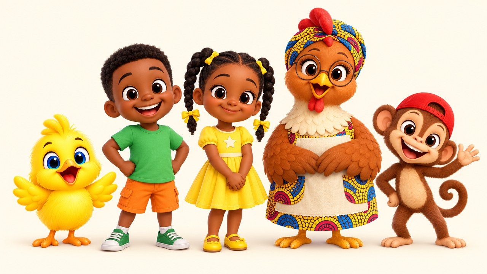

Touche ▶ sur chaque lecteur, puis dis-moi ton choix.
Même texte, trois voix différentes. Une vraie voix d'enfant n'est pas autorisée par la plateforme : ce sont des voix légères et pétillantes, très claires.

De gauche à droite : PIOUPIOU, Zola, Mawa, Maman Poule, Kiki.